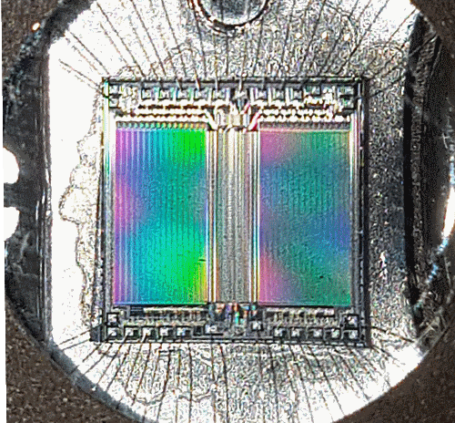

内存组件
RAM 和 ROM 组件是 Logisim-evolution 内置库中两个非常有用的组件。 然而，由于它们可以存储的信息量很大，它们也是最复杂的两个组件。
有关它们如何在电路中工作的文档可以在 RAM 和 库参考 的 ROM 页面。 用户指南 的这一部分介绍了允许用户查看和编辑内存内容的界面（可以理解为查看存储在电脑上文件的字节层面信息）。
Logisim-evolution 的集成十六进制编辑器
戳内存
弹出菜单和文件

32K x 8 UV EPROM
下一节: 十六进制编辑器 .